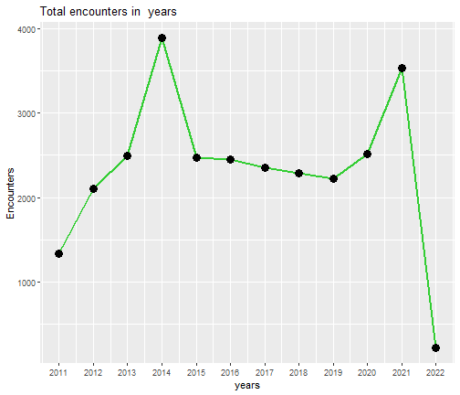
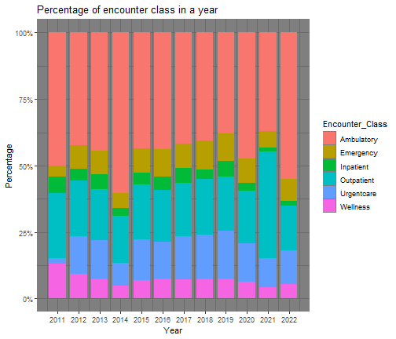
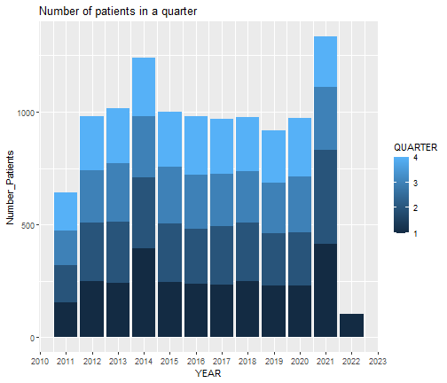

This HTML file showcase the visualisations of the analysis for MASSACHUSETTS GENERAL HOSPITAL database.
library(DBI) library(odbc) library(ggplot2) library(scales) library(tidyr)
conn<- dbConnect( odbc(), Driver = "ODBC Driver 17 for SQL Server", Server="ANELISWA\\SQLEXPRESS", Database= "Hospital Database", Trusted_Connection ="Yes" )
encounterdata<- dbGetQuery(conn, "select YEAR(START) AS YEAR, Count(ENCOUNTERCLASS) AS ENCOUNTER_PER_YEAR from dbo.encounters GROUP BY YEAR(START) ORDER BY YEAR(START);") head( encounterdata)
## YEAR ENCOUNTER_PER_YEAR ## 1 2011 1336 ## 2 2012 2105 ## 3 2013 2496 ## 4 2014 3884 ## 5 2015 2468 ## 6 2016 2453
ggplot(encounterdata, aes(x= YEAR, y=ENCOUNTER_PER_YEAR)) + geom_line(color= "limegreen", linewidth =1)+ geom_point(color="black", size =4)+ scale_x_continuous(breaks = breaks_width(1))+ labs(title = "Total encounters in years", x ="years", y="Encounters")+ theme_grey()

perc_encounter<- dbGetQuery(conn, "SELECT Year(START) as Year, cast(round(sum(case when ENCOUNTERCLASS= 'ambulatory' then 1 else 0 end)* 100.0/ count(ENCOUNTERCLASS),2) as float) as Ambulatory, cast(round(sum(case when ENCOUNTERCLASS= 'urgentcare' then 1 else 0 end)* 100.0/ count(ENCOUNTERCLASS),2) as float) as Urgentcare, cast(round(sum(case when ENCOUNTERCLASS= 'emergency' then 1 else 0 end)* 100.0/ count(ENCOUNTERCLASS),2) as float) as Emergency, cast(round(sum(case when ENCOUNTERCLASS= 'inpatient' then 1 else 0 end)* 100.0/ count(ENCOUNTERCLASS),2) as float) as Inpatient , cast(round(sum(case when ENCOUNTERCLASS= 'outpatient' then 1 else 0 end)* 100.0/ count(ENCOUNTERCLASS),2) as float) as Outpatient, cast(round(sum(case when ENCOUNTERCLASS= 'wellness' then 1 else 0 end)* 100.0/ count(ENCOUNTERCLASS),2) as float) as Wellness FROM dbo.encounters group by YEAR(START) ORDER BY YEAR(START);") head(perc_encounter)
## Year Ambulatory Urgentcare Emergency Inpatient Outpatient Wellness ## 1 2011 49.93 2.25 4.12 6.21 24.48 13.02 ## 2 2012 42.47 14.20 8.69 4.42 21.09 9.12 ## 3 2013 44.35 14.38 9.01 5.37 19.43 7.45 ## 4 2014 60.27 8.42 5.56 3.04 17.84 4.87 ## 5 2015 43.40 15.40 9.24 4.50 20.54 6.93 ## 6 2016 43.82 13.90 10.19 5.06 19.61 7.42
perc_long<-pivot_longer(perc_encounter, cols = c(Ambulatory,Urgentcare, Emergency, Inpatient, Outpatient,Wellness), names_to = "Encounter_Class", values_to = "Percentage") ggplot(perc_long, aes(x=Year, y=Percentage, fill=Encounter_Class)) + theme_dark() + geom_bar(stat="identity", position = "stack", width =0.8) + scale_x_continuous(breaks = breaks_width(1)) + labs(title = "Percentage of encounter class in a year") + scale_y_continuous(labels = percent_format(scale=1))

time_encounter<- dbGetQuery(conn, "select cast(round(sum(case when datediff(hour, START,STOP) > 24 then 1 else 0 end)*100.0 / count(STOP),2) as float) as greater_than_24, cast(round(sum(case when datediff(hour, START,STOP) <= 24 then 1 else 0 end)*100.0 / count(STOP),2) as float) as less_than_24 from dbo.encounters;") time_encounter
## greater_than_24 less_than_24 ## 1 0.25 99.75
zero_pcov<- dbGetQuery(conn, "select cast(round(sum(case when PAYER_COVERAGE = 0.00 THEN 1 ELSE 0 END)*100.0 / COUNT(*),2) as float) as perc_coverage_is0 FROM dbo.encounters;") zero_pcov
## perc_coverage_is0 ## 1 48.71
procedures<- dbGetQuery(conn, "Select top 10 CAST(DESCRIPTION AS nvarchar) AS PROCEDURES,count(*) as times_perfomed, CAST(round(AVG(BASE_COST),2) AS FLOAT) AS AVG_BASE_COST from dbo.proceduress WHERE CAST(DESCRIPTION AS nvarchar)LIKE '%procedure%' group by CAST(DESCRIPTION AS nvarchar) ORDER BY count(*) DESC") procedures
## PROCEDURES times_perfomed AVG_BASE_COST ## 1 Renal dialysis (procedure) 2746 1004.09 ## 2 Cytopathology procedure prepa 258 2002.04 ## 3 Spirometry (procedure) 209 7792.77 ## 4 Bone density scan (procedure) 198 9602.86 ## 5 Mammography (procedure) 194 116.59 ## 6 Echocardiography (procedure) 179 956.18 ## 7 Teleradiotherapy procedure (pr 170 997.45 ## 8 Hearing examination (procedure 144 431.00 ## 9 Throat culture (procedure) 115 1914.27 ## 10 Plain chest X-ray (procedure) 78 7751.18
basecost<- dbGetQuery(conn, "Select top 10 cast(DESCRIPTION as nvarchar) as Procedures, cast(round(AVG(BASE_COST),2) as float) AS BASECOST, COUNT(*) AS TIMES_PERFOMED FROM dbo.proceduress where cast(DESCRIPTION as nvarchar) like '%procedure%' group by CAST(DESCRIPTION AS nvarchar) ORDER BY BASECOST DESC ") basecost
## Procedures BASECOST TIMES_PERFOMED ## 1 Admit to ICU (procedure) 206260.40 5 ## 2 Hemodialysis (procedure) 29299.56 27 ## 3 Thoracentesis (procedure) 19622.00 1 ## 4 Bone density scan (procedure) 9602.86 198 ## 5 Spirometry (procedure) 7792.77 209 ## 6 Plain chest X-ray (procedure) 7751.18 78 ## 7 Sputum microscopy (procedure) 6963.00 1 ## 8 Sputum examination (procedure) 6429.28 71 ## 9 Biopsy of breast (procedure) 3905.71 7 ## 10 Cytopathology procedure prepa 2002.04 258
Avg_claim<- dbGetQuery(conn, "SELECT NAME , AVG(TOTAL_CLAIM_COST) AS AVG_CLAIM_COST from dbo.encounters join dbo.payers on dbo.encounters.Id_payers = dbo.payers.Id_payers group by NAME;") Avg_claim
## NAME AVG_CLAIM_COST ## 1 Aetna 2767.047 ## 2 Anthem 4236.811 ## 3 Blue Cross Blue Shield 3245.585 ## 4 Cigna Health 2996.950 ## 5 Dual Eligible 1696.191 ## 6 Humana 3269.300 ## 7 Medicaid 6205.219 ## 8 Medicare 2167.552 ## 9 NO_INSURANCE 5593.197 ## 10 UnitedHealthcare 2848.342
patient_quarter<- dbGetQuery(conn,"SELECT DATEPART(YEAR,START) AS YEAR, DATEPART(QUARTER, START) AS QUARTER, Count(distinct Id_patient) as Number_Patients FROM dbo.encounters group by DATEPART(YEAR,START),DATEPART(QUARTER, START) order by YEAR, QUARTER") head(patient_quarter,5)
## YEAR QUARTER Number_Patients ## 1 2011 1 156 ## 2 2011 2 162 ## 3 2011 3 155 ## 4 2011 4 168 ## 5 2012 1 249
ggplot(patient_quarter, aes(x=YEAR, y=Number_Patients, fill=QUARTER))+ geom_bar(stat="identity", position = "stack")+ theme_grey() + scale_x_continuous(breaks = breaks_width(1))+ labs(title = "Number of patients in a quarter")

read_30d<- dbGetQuery(conn,"with encounter as ( SELECT Id_patient, Id_encounter, STOP, LAG(STOP) OVER (PARTITION BY Id_patient ORDER BY STOP) AS prev_encounter_date from dbo.encounters ), ReadmmittedPatients AS ( Select distinct Id_patient from encounter where DATEDIFF(DAY, prev_encounter_date, STOP) between 1 and 30 ) Select Count(*) As total_patients_readmitted_30d from ReadmmittedPatients") read_30d
## total_patients_readmitted_30d ## 1 772
most_readm<- dbGetQuery(conn,"select top 15 FIRST, LAST, count(*) as number_readmitted FROM dbo.encounters e join dbo.patients p on e.Id_patient=p.Id_patient group by FIRST, LAST order by number_readmitted desc") head(most_readm)
## FIRST LAST number_readmitted ## 1 Kimberly Collier 1381 ## 2 Shani Parisian 887 ## 3 Mariano O'Kon 877 ## 4 Gail Glover 447 ## 5 Ward Nicolas 441 ## 6 Marcos Parker 392